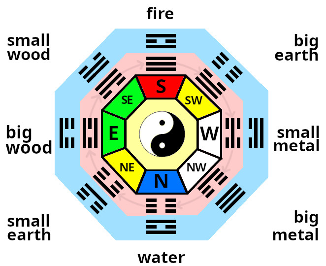

The 8 Directions
Bagua (or Pakua) is the Chinese for 8 directions.
The Taoists identified Qi (energy) as having differing characteristics dependant upon direction of flow and orientation. These are the 5 Elements with additional subdivisions of the Earth, Metal & Wood elements.
Fire, Big Earth, Small Metal, Big Metal, Water, Small Earth, Big Wood Small Wood.
Two sets of Baguas (8 directions) were developed.
- A fixed bagua shows structurally inherent 'Shui' Qi(energy).
- A moveable bagua shows free flowing 'Feng' Qi(energy).
Heavenly Bagua - moveable
The inner Trigrams (on the Lo Pan compass & diagram) show the "Former Heavenly Sequence" which is a moveable sequence describing the quality of free flowing Feng energy.
Earthly Bagua - fixed
The outer Trigrams relate to the "Later Heavenly Sequence". This describes the quality of earth energy or (Shui) inherent in the structure. This can be thought of as gravitational effect .
Combining these two Baguas gives the portent of a particular space.
( Trigrams from each sequence produces a Hexagram which fully describes the quality of energy present).

The 8 directions.
The Chinese always show fire ( south ) at the top because it relates to the heavens ( S, fire, yang ) above and the earth(N, water, yin) below.
Lo Pan (compass)
The Lo Pan usually has a magnetic compass at its center. It has radial and concentric markings showing the main 8 directional elements, the 'former Heavenly' and 'later Earthly' sequences. Smaller divisions that relate to directional energy and potents of spaces is included. This can sometimes be detailed to 64 types (as in the 'I-ching') or 5.65degs of accuracy. It can also include 'water dragon' information for the reading of water courses. is used to read information on orientation and the qualities of energy. It has a magnetic compass at its center with radial and concentric markings to indicate the main 8,and sub divisions, directions, the former and later heavenly sequences, portents (fortune) of spaces, Water Dragon (flows of water, rivers & streams) information and more.
Standard Lo Pan compass
Earthly Bagua (fixed) qualities
These 8 spaces refer to the general characteristics of Shui in a room. They are true magnetic orientations. The diagram shows the numbered spaces for a classic south facing example.
eg. A room with a centrally positioned north facing door would have the space number 4 at the entrance and 5 to the near lefthand corner.There is no significance of the numbers other than identification.

Earthly Bagua
The general characteristics can be summarised simply as:
| Space | Quality | Action | |
|---|---|---|---|
| 1|SW | Knowledge | Higher good,info needed | Books, guides |
| 2|W | Family | Fellowship, employees | Photos of |
| 3|NW | Wealth, Health | Value, quality | Portrait, Financial docs |
| 4|N | Fame | How you are percieved | Items related to how you wish to be percieved |
| 5|NE | Marriage, Business | Unions, Partnerships | Photos,items related to |
| 6|E | Children | New ideas, projects, early growth | Photos, items related to |
| 7|SE | Helpful Friends | Helpful | Telephone, Computer |
| 8|S | Career | Lifes Purpose, Fusion | Items relating to vocation, purpose |
Heavenly Bagua qualities
These "moveable" portents tell us the interactions of free flowing qi (energy) with the stable state of the above Earthly Bagua.
| Space | Quality | Portent |
|---|---|---|
| a | Life, Stable, Balanced | + |
| b | Longevity, Extends Life | ++ |
| c | Creates Qi | +++ |
| d | Problems, Hinderances | -- |
| e | Death, Disconnects | --- |
| f | Five Ghosts, Ancestors | + |
| g | Good fortune, Luck | ++ |
| h | Bad influences, Malign | + |
Eg. A south facing room (door to south) has predominantly Fire Qi (energy) entering it, so the interaction to an eastward wall space ( middle of East side) would give us an exchange of wood (east) with fire (south). The "5 element cycle" shows us that Wood feeds Fire. Therefor the portent would be auspicious. This space is shown in the "Portent Map" as having the portent "C" or (creates Qi). The energetic activity in that space is generative.
NB. It is the effect of the individual spaces (shui - relating to the Eathly Bagua) upon the predominant quality of Qi(energy) entering the room (feng - relating to the Heavenly Bagua).
This example is one of the most simple examples, the others are more complex.
A full reading is made by overlaying the former and later heavenly sequences. Combining the two trigrams (3 lines) gives a hexagram (6 lines) which describes the energetic properties of a space.
These are the same (8x8) 64 hexagrams (energy characteristics or portents) found in the "I Ching" book of change. Some research has shown a similarity to the 64 cordons of DNA.

Portent map
NB. Centrally positioned activity in a room is best if no divination has been done as the energy exchanges from the structure have less influence on the majority of the room. The larger the space, the less influence the structure has on free flowing (feng) Qi(energy).
The energy exchange at windows and secondary doors also has a calculable effect. This situation is "feng to feng" rather than "feng to shui" interaction.

Flow & interaction representation
readings
To establish the overall characteristic of Qi ( energy ) within a building , take a magnetic compass reading at the main door (from the door facing outwards).
It is the flow of energy into the building that we are interested in. Further qualities of energy in seperate rooms is determined by entry flow. This is a sub-flavour of energy from the original source.
Whilst each space contains all of the five elements energies - the entry point is key to determining what element has the most influence.
Eg. Qi flowing into a room facing south has the general characteristic of the fire element. The two Baguas (Earthly and Heavenly) reveal properties and interactions of energy by direction.

flows of energy
Flows of Qi and the eddying corner effect explain how the 8 directions are applicable to a 4 sided room.
Every space contains all the elements, however we can however determine which element/s have the greatest influence and the overall characteristic.

Door position also tells us whether the Qi is more or less active.
Yang room = left sided doorway, Qi spirals clockwise. Most active, best for working activities
Yin room = right sided opening, Qi spirals anti-clockwise. Least active, best for calming ( bedrooms, relaxation etc)
Lung room = central opening, Qi spirals both ways, yin quality to the right side of the room (calming), yang to the left (active)

Lo Shu (magic square)
Lo Shu is a numeric magic square which said to have been found as markings the back of a Turtle. It ties in the 8 directions and seasonal changes and relates to personal horoscope numbers.
(see the horoscope section to calculate your own personal number).
Odd and even numbers alternate in the periphery of the square, the four corners are even numbers,
and the 5 odd numbers form a cross in the centre. Each line (vertical, horizontal and diagonal) add
up to 15, which is the number of days in each of the 24 cycles of the Chinese solar year.
I have indicated how the seasons tie in as well as how the amount of Yin and Yang varies. Maximum
Yin during winter, increasing Yang and decreasing Yin to mid summer and vice versa.

Lo Shu (magic square)